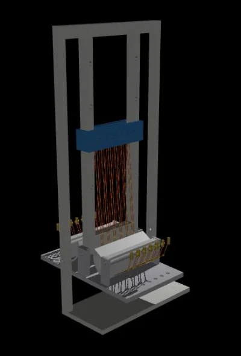
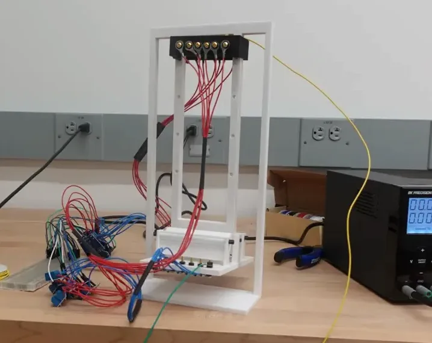

Run many thin wires in parallel, and fire them in turns
A shape-memory-alloy wire contracts when it's heated (in practice, when you pass current through it) and relaxes as it cools. That makes it a linear actuator with no motor, no gearbox, and almost no volume — attractive for biomimetic joints where a muscle-like pull is what you want. The catch is speed: a wire can only contract again once it has cooled, and cooling is slow.
The approach I'm testing works around the cooling limit instead of fighting it:
- Parallel arrays. Several thin Flexinol wires share the load instead of one thick wire, so each cools faster.
- One continuous zigzag. The wire is routed back and forth as a single length, which keeps tension equal across every segment — while each electrical post along the route stays independently controllable.
- Sequenced firing. Wire sections activate in turn: some contract while others are still cooling, so output frequency goes up without any individual wire cycling faster.
- Readiness from resistance. A wire's electrical resistance changes as it recovers thermally, so watching resistance tells the controller which wires are ready to fire — no extra sensors on the actuator itself.

The firing has to fail safe, so the PC never owns it
An SMA wire that's left energized keeps heating until it's damaged, so the one thing the firing loop can't depend on is a laptop that might crash or drop USB mid-pulse. I split the system so that gate authority lives on an Arduino Mega, not the PC:
- The Mega owns the gates. It enforces a hard
MAX_ONceiling on every pulse and a host heartbeat — if it stops hearing from the PC for ~100 ms, it drops all gates. The PC sends intent; the Mega decides whether to honour it. - One-way serial. The link is a fire-and-forget ASCII protocol (115200 baud, PC → Mega only). The firing loop never blocks waiting on the host, and the timing base stays untouched.
- MOSFET-switched sections. Each section of the array is driven by its own low-side MOSFET; a small command set (
START/STOP,PERIOD,ONTIME, per-section enable, and a manualFIREfor calibration) sets the rotation.
MAX_ON ceiling + host heartbeat fail-safeFIRE is manual, for calibration
Read every wire without touching the firing
The wire is its own sensor. Its resistance tracks the phase transformation as it heats and cools, so I never poll the Arduino for state — I watch the wires directly on a data-acquisition card and infer everything from voltage:
- Always-on bias sense. A resistor across each MOSFET pushes a few mA of continuous sense current — far too little to heat the wire — so there is a live resistance reading on every wire between firings, not just during them.
- Resistance = the thermometer. R = V / I per wire. Normalised against a per-wire calibration, it becomes a recovery fraction,
ρ = (R_start − R_min) / (R_0 − R_min), that says how far each wire has cooled — the signal the scheduler fires on. - Closed-loop cutoff. Rather than trust a fixed on-time table, the plan is to fire a hot, short pulse and cut it the instant resistance says the wire has finished contracting — a per-wire, per-pulse decision. Fixed-duration open-loop firing is then just the baseline to beat.
- One clock. A multichannel differential DAQ samples the wire voltages, a shunt gives true current (so R and energy stop assuming a fixed current), and the firing sync line lands on a spare DAQ input — so every fire event sits on the same timebase as the resistance trace it caused, with no clock-stitching.
- bias sense current
- R = V/I
- readiness ρ
- fire hot
- R-triggered cutoff
All of it lands in a browser dashboard I built for the lab: live voltage and resistance strip charts, a motor-unit-style firing raster (one bar per detected pulse, from a voltage-hysteresis detector), and a pulse table logging duration, energy, R start/end, ΔR and cycle count. Every run is written to disk for post-hoc analysis.
Timeline
- Nov 2025Joined the lab as an undergraduate student researcher.
- May 2026Presented the parallel-array work at the Virginia Tech Hume Colloquium alongside two lab-mates (Ethan Yueh, Christine Robinson); MITRE and MIT Lincoln Laboratory roundtables the same day.
- Sep 2026Drive electronics + acquisition dashboard bring-up; first single-channel resistance runs logged end to end.
- Fall 2026 →Scaling from single-channel to the full array; manuscript in preparation.